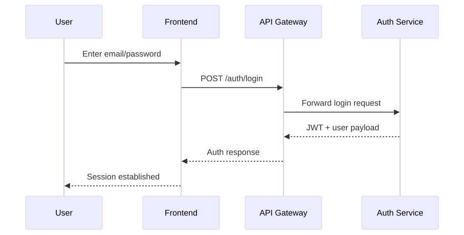
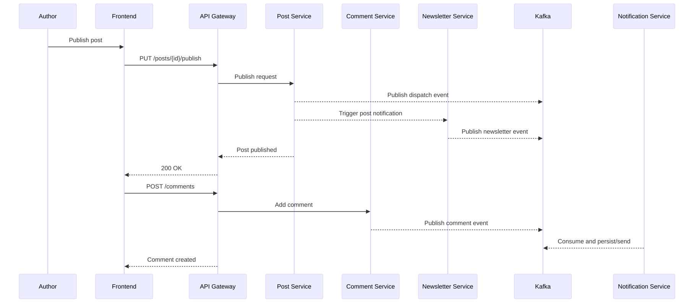

Inkwell
Traditional blogging systems often bundle authentication, content publishing, media management, notifications, and subscriptions into a single monolith. This increases release risk, slows feature delivery, and makes independent scaling difficult.
Build a production-grade, modular blogging platform where each domain (identity, posts, comments, taxonomy, media, newsletters, notifications) is independently deployable while preserving a unified user experience through a central API Gateway.
READER,
AUTHOR, ADMIN)jjwt)common-logback-spring.xml)Inkwell follows a gateway-centric microservices architecture:
api-gateway
(:8080).service-registry, :8761).service-registry (:8761) - Eureka
registryapi-gateway (:8080) - entry point +
routing + token validationauth-service (:8081) - auth, users,
subscriptions, admin workflowspost-service (:8082) - post lifecycle,
likes, follows, viewscomment-service (:8083) - comments,
moderation, repliescategory-service (:8084) - categories,
tags, post taxonomy mappingmedia-service (:8085) - media upload,
metadata, post linkingnewsletter-service (:8086) - subscriber
lifecycle + campaignsnotification-service (:8087) -
notification persistence + unread cache + emailX-User-Id, X-User-Role,
X-User-Email)The diagram shows client-to-gateway flow, service discovery via Eureka, and each service's integration with shared infrastructure (MySQL, Redis, Kafka, SMTP, S3).
flowchart LR
FE[Frontend React/Vite] -->|HTTPS REST| GW[API Gateway 8080]
GW -->|Service Discovery| REG[Eureka Registry 8761]
GW --> AUTH[Auth Service 8081]
GW --> POST[Post Service 8082]
GW --> COMM[Comment Service 8083]
GW --> CAT[Category Service 8084]
GW --> MEDIA[Media Service 8085]
GW --> NEWS[Newsletter Service 8086]
GW --> NOTIF[Notification Service 8087]
AUTH --> MYSQL[(MySQL)]
POST --> MYSQL
COMM --> MYSQL
CAT --> MYSQL
MEDIA --> MYSQL
NEWS --> MYSQL
NOTIF --> MYSQL
POST --> REDIS[(Redis)]
NOTIF --> REDIS
AUTH --> REDIS
AUTH --> KAFKA[(Kafka)]
POST --> KAFKA
COMM --> KAFKA
NEWS --> KAFKA
NOTIF --> KAFKA
AUTH --> SMTP[(SMTP)]
NEWS --> SMTP
NOTIF --> SMTP
MEDIA --> S3[(S3 Compatible Storage)]
| Module | Core Responsibility | Key Behaviors |
|---|---|---|
| api-gateway | API entry and routing | Route mapping, CORS, JWT filter, aggregated OpenAPI |
| service-registry | Service discovery | Eureka registry and lookup |
| auth-service | Identity and access | Register/login/refresh, profile, role/state changes, author upgrade, subscription billing workflows |
| post-service | Publishing domain | Post CRUD/lifecycle, views, likes, author follow graph, publish notification triggers |
| comment-service | Discussion domain | Comment CRUD, replies, moderation queue, comment likes, mention events |
| category-service | Taxonomy domain | Category/tag CRUD and post mapping tables |
| media-service | Asset management | Upload/update/link/unlink/delete media, storage abstraction (S3/local) |
| newsletter-service | Email subscription domain | Subscribe/confirm/unsubscribe/preferences, newsletters, post mailers |
| notification-service | Multi-channel notifications | Single/bulk notifications, unread count, read/delete operations, Kafka consumer side effects |
| inkwell-frontend | User experience | Auth flows, feed, editor, engagement, profile/admin screens |
The platform uses domain-driven entity sets across services. Main relationship axes:
User, EmailOtp,
AuthorUpgradeRequest, PaymentOrder,
UserSubscription, AuditLogPost, PostLike,
AuthorFollowComment, CommentLike,
AppUserCategory, Tag,
PostCategory, PostTagMediaSubscriberNotification, AppUserThe model emphasizes ownership
(User -> Post/Comment), many-to-many post taxonomy, and
event-driven communication artifacts (subscription + notification).
erDiagram
USER ||--o{ POST : authors
USER ||--o{ COMMENT : writes
USER ||--o{ POST_LIKE : reacts
USER ||--o{ COMMENT_LIKE : reacts
USER ||--o{ AUTHOR_FOLLOW : follows
USER ||--o{ USER_SUBSCRIPTION : owns
USER ||--o{ PAYMENT_ORDER : creates
USER ||--o{ AUDIT_LOG : acts
USER ||--o{ AUTHOR_UPGRADE_REQUEST : submits
USER ||--o{ NOTIFICATION : receives
USER ||--o{ SUBSCRIBER : has
POST ||--o{ COMMENT : contains
POST ||--o{ POST_LIKE : has
POST ||--o{ POST_CATEGORY : mapped
POST ||--o{ POST_TAG : mapped
POST ||--o{ MEDIA : links
COMMENT ||--o{ COMMENT_LIKE : has
CATEGORY ||--o{ POST_CATEGORY : classifies
TAG ||--o{ POST_TAG : labels
USER {
BIGINT id PK
STRING email
STRING username
STRING role
BOOLEAN active
}
POST {
BIGINT id PK
BIGINT author_id
STRING title
STRING slug
STRING status
BOOLEAN featured
}
COMMENT {
BIGINT id PK
BIGINT post_id
BIGINT author_id
STRING status
BIGINT parent_comment_id
}
MEDIA {
BIGINT id PK
BIGINT uploader_id
BIGINT linked_post_id
STRING storage_key
}
NOTIFICATION {
BIGINT id PK
BIGINT recipient_id
BIGINT actor_id
STRING type
BOOLEAN read
}
SUBSCRIBER {
BIGINT id PK
STRING email
STRING status
BOOLEAN post_alerts
}
User: primary identity, role, and account statusPost: publishing unit with status and metadataComment: threaded discussion and moderation statusPostCategory/PostTag: many-to-many
taxonomy mappingMedia: object metadata and post linkageSubscriber: email lifecycle and preference flagsNotification: channel-neutral notification payload/read
stateUserSubscription/PaymentOrder:
monetization and entitlement stateThe class model follows layered architecture. Controllers orchestrate requests, services implement business logic, repositories manage persistence, and entities represent domain state.
classDiagram
class AuthController
class SubscriptionController
class AuthServiceImpl
class SubscriptionService
class UserRepository
class User
class PostResource
class PostServiceImpl
class PostRepository
class Post
class CommentResource
class CommentServiceImpl
class CommentRepository
class Comment
class NotificationResource
class NotificationServiceImpl
class NotificationRepository
class Notification
AuthController --> AuthServiceImpl
SubscriptionController --> SubscriptionService
AuthServiceImpl --> UserRepository
UserRepository --> User
PostResource --> PostServiceImpl
PostServiceImpl --> PostRepository
PostRepository --> Post
CommentResource --> CommentServiceImpl
CommentServiceImpl --> CommentRepository
CommentRepository --> Comment
NotificationResource --> NotificationServiceImpl
NotificationServiceImpl --> NotificationRepository
NotificationRepository --> Notification
| Service | Endpoint | Method | Purpose |
|---|---|---|---|
| Auth | /auth/register, /auth/login,
/auth/refresh |
POST | Signup, login, token refresh |
| Auth | /auth/profile, /auth/users/{userId} |
GET/PUT | Profile and admin user management |
| Auth | /auth/subscriptions/order,
/auth/subscriptions/verify |
POST | Subscription payment flow |
| Post | /posts, /posts/{postId}/publish,
/posts/{postId}/like |
POST/PUT | Authoring, publishing, engagement |
| Post | /posts/authors/{authorId}/follow |
POST/DELETE | Follow graph operations |
| Comment | /comments,
/comments/{commentId}/approve |
POST/PUT | Add and moderate comments |
| Category | /categories, /tags,
/tags/post |
CRUD | Taxonomy and post mappings |
| Media | /media, /media/link,
/media/{mediaId}/unlink |
POST | Upload and link media |
| Newsletter | /newsletter/subscribe,
/newsletter/confirm,
/newsletter/send-newsletter |
POST/GET | Subscriber lifecycle and campaigns |
| Notification | /notifications, /notifications/bulk,
/notifications/unread-count |
POST/GET | Notification operations |
Request:
POST /auth/login
{
"email": "author@inkwell.com",
"password": "StrongPassword#1"
}Success Response:
{
"accessToken": "<jwt-token>",
"tokenType": "Bearer",
"expiresAt": 1760000000000,
"user": {
"userId": 42,
"username": "author42",
"role": "AUTHOR"
}
}Error Response (Example):
{
"timestamp": "2026-04-21T10:21:00Z",
"status": 401,
"error": "Unauthorized",
"message": "Invalid credentials",
"path": "/auth/login"
}Request:
POST /posts
{
"title": "Event-Driven Notifications in Spring",
"content": "Long-form markdown/html content",
"excerpt": "How Kafka decouples side-effects.",
"categoryIds": [1, 2],
"tagIds": [7, 11]
}Success Response:
{
"id": 1001,
"title": "Event-Driven Notifications in Spring",
"slug": "event-driven-notifications-in-spring",
"status": "DRAFT",
"authorId": 42,
"createdAt": "2026-04-21T10:32:00Z"
}/auth/login and
receives JWT.Authorization: Bearer <token> to gateway.internal-api-key where configured.Shows credential submission, token issuance, and token-based subsequent access through gateway.
sequenceDiagram
participant U as User
participant FE as Frontend
participant GW as API Gateway
participant AUTH as Auth Service
U->>FE: Enter email/password
FE->>GW: POST /auth/login
GW->>AUTH: Forward login request
AUTH-->>GW: JWT + user payload
GW-->>FE: Auth response
FE-->>U: Session established
Shows how publish/comment actions fan out through Kafka and are consumed by notification services while preserving user-facing synchronous response.
sequenceDiagram
participant A as Author
participant FE as Frontend
participant GW as API Gateway
participant POST as Post Service
participant COMM as Comment Service
participant NEWS as Newsletter Service
participant K as Kafka
participant NOTIF as Notification Service
A->>FE: Publish post
FE->>GW: PUT /posts/{id}/publish
GW->>POST: Publish request
POST-->>K: Publish dispatch event
POST-->>NEWS: Trigger post notification
NEWS-->>K: Publish newsletter event
POST-->>GW: Post published
GW-->>FE: 200 OK
FE->>GW: POST /comments
GW->>COMM: Add comment
COMM-->>K: Publish comment event
NOTIF-->>K: Consume and persist/send
GW-->>FE: Comment created
[Insert Screenshot: Login Page]
Show email/password form, OAuth options, and validation errors.
[Insert Screenshot: Signup with OTP]
Show OTP request, verification step, and successful account creation
state.
[Insert Screenshot: Home Feed]
Show published posts list, filters, and featured content.
[Insert Screenshot: Post Editor]
Show rich text editing, category/tag assignment, and publish
action.
[Insert Screenshot: Post Details + Comments]
Show post content, likes/views, threaded comments, and reply
actions.
[Insert Screenshot: Author Profile]
Show follower controls, authored post list, and profile
metadata.
[Insert Screenshot: Newsletter Preferences]
Show subscription status, preference toggles, and unsubscribe
action.
[Insert Screenshot: Notifications Panel]
Show unread count, mark-read actions, and notification types.
[Insert Screenshot: Admin Dashboard]
Show user management, author upgrade decisions, and audit log
list.
mvn -q -DskipTests=false test)mvn verify)This flow shows quality gates before image publish and environment deployment.
flowchart LR
A[Git Push/PR] --> B[CI Trigger]
B --> C[Maven Test]
C --> D[JaCoCo + Verify]
D --> E[SonarQube Quality Gate]
E --> F[Docker Build per Service]
F --> G[Registry Push]
G --> H[Deploy Dev]
H --> I[Deploy Stage]
I --> J[Deploy Prod]
service-registry and
api-gateway8081-8087)5173)docker-compose.kafka.yml| Challenge | Risk | Implemented/Recommended Solution |
|---|---|---|
| Cross-service authorization | Inconsistent access checks | Validate JWT at gateway, propagate user context headers, re-check roles in service layer |
| Notification fan-out from multiple domains | Tight coupling and retries complexity | Kafka event dispatch + dedicated notification consumer service |
| Accurate view counting | Inflated counts via refresh loops | Redis-backed session dedup key with TTL |
| Media storage portability | Vendor lock-in and migration overhead | Storage abstraction with configurable S3/local provider |
| Moderation latency vs openness | Abuse or poor UX | Configurable moderation mode (pending vs immediate
approval path) |
| Shared DB vs service autonomy | Domain coupling | Keep ownership by service and migrate to separate schemas progressively |
Inkwell demonstrates a production-oriented microservices architecture with clear domain boundaries, scalable communication patterns, and modern Spring-based implementation practices. The design supports continuous feature growth (content, engagement, subscriptions, notifications) while preserving operational flexibility through gateway routing, service discovery, event-driven integration, and modular deployability.